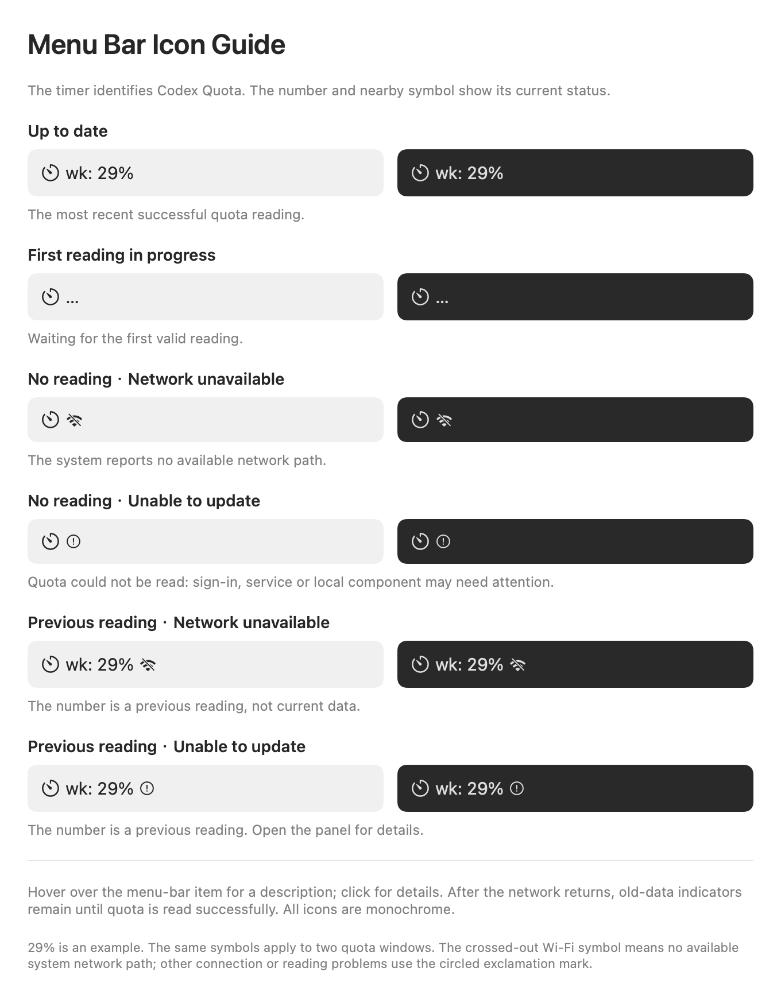

Understand your quota at a glance.
Help with signing in, reading status icons, and understanding your quota history.
Common questions
Where is the app window?
Opening the app manually shows the quota window. After closing it, click the timer icon or percentage in the menu bar, or open the app again to restore the window. Launching at login keeps the app in the menu bar.
How do I get started?
Choose “Sign in with ChatGPT” and complete sign-in on the official OpenAI website. You need an account with Codex access. No separate Codex installation is required. Allow time for the first reading.
Can I try it without signing in?
Choose “Explore demo” on the signed-out panel, or under More when signed in. The demo is labeled “Sample data” and includes one-window and two-window examples. Choose “Back to sign in” or “Back to my quota” to leave.
Why is only one quota window shown?
The app displays the windows returned for your account. It does not invent a missing window. The 6-hour, 24-hour, and 7-day controls change the history range, not your account limits.
Why has the percentage not changed yet?
Readings refresh automatically; you can also choose Refresh. This is not a second-by-second billing meter. A warning beside a percentage means it may be a previous reading. Hover over the menu bar item for the last successful reading time.
What do the offline and exclamation icons mean?
Crossed-out Wi-Fi means the system reports no usable network connection. A circled exclamation mark means a read failed and may involve sign-in, the service, a proxy connection, or the local component. Open the panel for details.
Why are there gaps or dashed lines in history?
History contains readings recorded on this Mac. Periods when the app was not running, the Mac was asleep, or reads failed cannot be reconstructed. Dashed links connect some discontinuous readings; they do not confirm that quota was reset. Smoothing makes the chart useful for observing trends.
Can the app add or reset quota?
No. It displays quota and reset times returned by the service. It does not sell quota or trigger a reset.
How do I change launch at login?
Open More and change “Launch at login”. You choose whether to enable it. If macOS requires approval, follow the prompt to System Settings. The app does not silently turn it back on after you disable it.
How do I clear history or sign out?
Choose “Clear” in More and confirm to remove chart records. Choose Sign out and confirm to clear this app’s sign-in state and chart history after a successful sign-out. This does not erase every component cache or sign you out of other Codex apps.
What should I include in a support request?
Include the app version, macOS version, time, steps, and panel message. Hide your email address and other personal details in screenshots. Do not send passwords, verification codes, credential files, or full authentication logs.
Menu bar icon guide
29% is an example. Missing data and 0% remaining are different states.


Contact support
fatimchuang53@gmail.com. Please include the version, steps, and panel message.